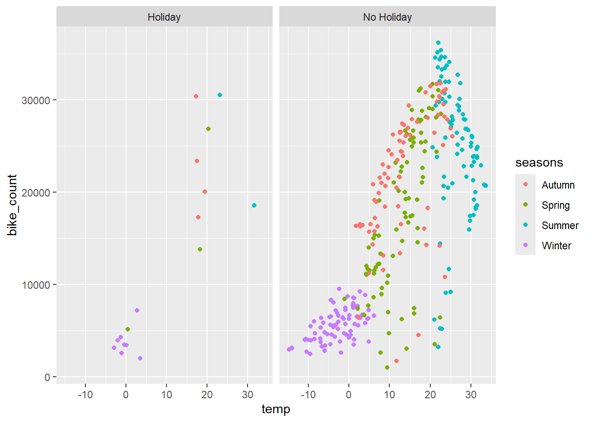
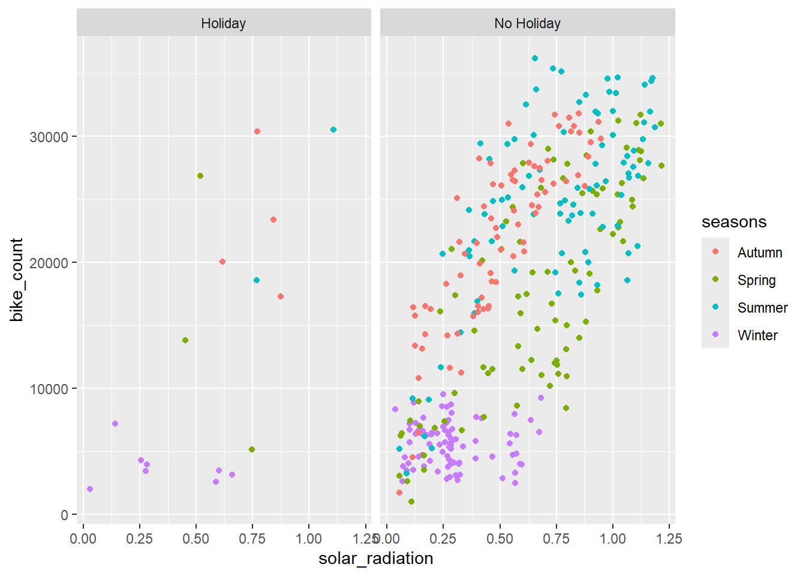

bike_data <-read_csv("https://www4.stat.ncsu.edu/~online/datasets/SeoulBikeData.csv", local =locale(encoding ="latin1"))
Rows: 8760 Columns: 14
── Column specification ────────────────────────────────────────────────────────
Delimiter: ","
chr (4): Date, Seasons, Holiday, Functioning Day
dbl (10): Rented Bike Count, Hour, Temperature(°C), Humidity(%), Wind speed ...
ℹ Use `spec()` to retrieve the full column specification for this data.
ℹ Specify the column types or set `show_col_types = FALSE` to quiet this message.
# Convert the Date column into an actual date (if need be). Recall the lubridate packagebike_data <- bike_data |>mutate(date = lubridate::dmy(Date)) |>select(-Date)bike_data
# Now briefly summarize each column to see if there are any weird values.summary(bike_data)
Rented Bike Count Hour Temperature(°C) Humidity(%)
Min. : 0.0 Min. : 0.00 Min. :-17.80 Min. : 0.00
1st Qu.: 191.0 1st Qu.: 5.75 1st Qu.: 3.50 1st Qu.:42.00
Median : 504.5 Median :11.50 Median : 13.70 Median :57.00
Mean : 704.6 Mean :11.50 Mean : 12.88 Mean :58.23
3rd Qu.:1065.2 3rd Qu.:17.25 3rd Qu.: 22.50 3rd Qu.:74.00
Max. :3556.0 Max. :23.00 Max. : 39.40 Max. :98.00
Wind speed (m/s) Visibility (10m) Dew point temperature(°C)
Min. :0.000 Min. : 27 Min. :-30.600
1st Qu.:0.900 1st Qu.: 940 1st Qu.: -4.700
Median :1.500 Median :1698 Median : 5.100
Mean :1.725 Mean :1437 Mean : 4.074
3rd Qu.:2.300 3rd Qu.:2000 3rd Qu.: 14.800
Max. :7.400 Max. :2000 Max. : 27.200
Solar Radiation (MJ/m2) Rainfall(mm) Snowfall (cm) Seasons
Min. :0.0000 Min. : 0.0000 Min. :0.00000 Length:8760
1st Qu.:0.0000 1st Qu.: 0.0000 1st Qu.:0.00000 Class :character
Median :0.0100 Median : 0.0000 Median :0.00000 Mode :character
Mean :0.5691 Mean : 0.1487 Mean :0.07507
3rd Qu.:0.9300 3rd Qu.: 0.0000 3rd Qu.:0.00000
Max. :3.5200 Max. :35.0000 Max. :8.80000
Holiday Functioning Day date
Length:8760 Length:8760 Min. :2017-12-01
Class :character Class :character 1st Qu.:2018-03-02
Mode :character Mode :character Median :2018-06-01
Mean :2018-06-01
3rd Qu.:2018-08-31
Max. :2018-11-30
# Check the character columnsbike_data$Seasons |>unique()
[1] "Winter" "Spring" "Summer" "Autumn"
# Turn the character variables (Seasons, Holiday, and Functioning Day) into factors.bike_data <- bike_data |>mutate(seasons =factor(Seasons), holiday =factor(Holiday), fn_day =factor(`Functioning Day`)) |>select(-Seasons, -Holiday, -`Functioning Day`)bike_data
# Lastly, rename the all the variables to have easy to use names (I use lower snake case but whatever you’d like is finebike_data <- bike_data |>rename('bike_count'=`Rented Bike Count`,'hour'="Hour","temp"=`Temperature(°C)`,"wind_speed"=`Wind speed (m/s)`,"humidity"=`Humidity(%)`,"vis"=`Visibility (10m)`,"dew_point_temp"=`Dew point temperature(°C)`,"solar_radiation"=`Solar Radiation (MJ/m2)`,"rainfall"="Rainfall(mm)","snowfall"=`Snowfall (cm)`)bike_data
# fn_day variable implies they were out of commission sometimes. Let’s remove those observations and that variablebike_data <- bike_data |>filter(fn_day =="Yes") |>select(-fn_day)bike_data
# To simplify our analysis, we’ll summarize across the hours so that each day has one observation associated with it. Let’s group_by() the date, seasons, and holiday variables and find the sum of the bike_count, rainfall, and snowfall variables and the mean of all the weather related variables.bike_data <- bike_data |>group_by(date, seasons, holiday) |>summarize(bike_count =sum(bike_count),temp =mean(temp),humidity =mean(humidity),wind_speed =mean(wind_speed),vis =mean(vis),dew_point_temp =mean(dew_point_temp),solar_radiation =mean(solar_radiation),rainfall =sum(rainfall),snowfall =sum(snowfall)) |>ungroup()
`summarise()` has grouped output by 'date', 'seasons'. You can override using
the `.groups` argument.
bike_data
# A tibble: 353 × 12
date seasons holiday bike_count temp humidity wind_speed vis
<date> <fct> <fct> <dbl> <dbl> <dbl> <dbl> <dbl>
1 2017-12-01 Winter No Holiday 9539 -2.45 45.9 1.54 1871.
2 2017-12-02 Winter No Holiday 8523 1.32 62.0 1.71 1471.
3 2017-12-03 Winter No Holiday 7222 4.88 81.5 1.61 456.
4 2017-12-04 Winter No Holiday 8729 -0.304 52.5 3.45 1363.
5 2017-12-05 Winter No Holiday 8307 -4.46 36.4 1.11 1959.
6 2017-12-06 Winter No Holiday 6669 0.0458 70.8 0.696 1187.
7 2017-12-07 Winter No Holiday 8549 1.09 67.5 1.69 949.
8 2017-12-08 Winter No Holiday 8032 -3.82 41.8 1.85 1872.
9 2017-12-09 Winter No Holiday 7233 -0.846 46 1.08 1861.
10 2017-12-10 Winter No Holiday 3453 1.19 69.7 2.00 1043.
# ℹ 343 more rows
# ℹ 4 more variables: dew_point_temp <dbl>, solar_radiation <dbl>,
# rainfall <dbl>, snowfall <dbl>
# Recreate your basic summary stats and then create some plots to explore relationships. Report correlation between your numeric variables as well# Looks to be right skewed with a pretty large standard deviation.bike_data |>summarize(across(`bike_count`,.fns =c("mean"= mean,"median"= median,"sd"= sd,"IQR"= IQR,"min"= min,"max"= max),.names ="{.col}_{.fn}"))
# Differences are pretty big in the Winter and Autumn but not the other seasons. Perhaps an interaction between these two variables is important.bike_data |>group_by(seasons, holiday) |>summarize(across(`bike_count`,.fns =c("mean"= mean,"median"= median,"sd"= sd,"IQR"= IQR,"min"= min,"max"= max),.names ="{.col}_{.fn}"))
`summarise()` has grouped output by 'seasons'. You can override using the
`.groups` argument.
# do some correlation# Definitely a few moderate relationships with bike_count here (temp and solar_radiation). temp and dew_point_temp are obviously pretty related. humidity and vis along with humidity and dew_point_temp as well.bike_data |>select(where(is.numeric)) |>cor() |>round(3)
# do some visualizations. Some expected trends here and we can see that once it gets pretty hot, bike rentals slow.ggplot(bike_data, aes(x = temp, y = bike_count)) +geom_jitter(aes(color = seasons)) +facet_grid(~holiday)

# More solar radiation is associated with more bike rentalsggplot(bike_data, aes(x = solar_radiation, y = bike_count)) +geom_point(aes(color = seasons)) +facet_grid(~holiday)

# Use functions from tidymodels to split the data into a training and test set (75/25 split). Use the strata argument to stratify the split on the seasons variable. On the training set, create a 10 fold CV splitset.seed(11)bike_split <-initial_split(bike_data, prop =0.75, strata = seasons)bike_train <-training(bike_split)bike_test <-testing(bike_split)bike_10_fold <-vfold_cv(bike_train, 10)bike_10_fold
# Get our metrics. The last model appears to be the bestrbind(MLR_CV_fit1 |>collect_metrics(),MLR_CV_fit2 |>collect_metrics(),MLR_CV_fit3 |>collect_metrics())
# A tibble: 6 × 6
.metric .estimator mean n std_err .config
<chr> <chr> <dbl> <int> <dbl> <chr>
1 rmse standard 4284. 10 165. Preprocessor1_Model1
2 rsq standard 0.822 10 0.0151 Preprocessor1_Model1
3 rmse standard 3156. 10 267. Preprocessor1_Model1
4 rsq standard 0.898 10 0.0176 Preprocessor1_Model1
5 rmse standard 3070. 10 213. Preprocessor1_Model1
6 rsq standard 0.903 10 0.0142 Preprocessor1_Model1
# fit that to the entire training set and then see how it performs on the test set.final_fit <-workflow() |>add_recipe(MLR_rec1) |>add_model(MLR_spec) |>last_fit(bike_split)final_fit |>collect_metrics() |>mutate(across(where(is.numeric), ~round(.x, 3)))
# A tibble: 2 × 4
.metric .estimator .estimate .config
<chr> <chr> <dbl> <chr>
1 rmse standard 3980. Preprocessor1_Model1
2 rsq standard 0.846 Preprocessor1_Model1
# Obtain the final model (fit on the entire training set) coefficient table using tidy().final_fit |>extract_fit_parsnip() |>tidy()|>mutate(across(where(is.numeric), ~round(.x, 3)))
# A tibble: 2 × 4
.metric .estimator .estimate .config
<chr> <chr> <dbl> <chr>
1 rmse standard 3999. Preprocessor1_Model1
2 rsq standard 0.844 Preprocessor1_Model1
# or display them all. However, LASSO does not seem to be a good fit.rbind( lasso_tune |>collect_metrics() |>mutate(model ="LASSO"))
# A tibble: 60 × 8
penalty .metric .estimator mean n std_err .config model
<dbl> <chr> <chr> <dbl> <int> <dbl> <chr> <chr>
1 0.001 rmse standard 4249. 10 147. Preprocessor1_Model… LASSO
2 0.001 rsq standard 0.816 10 0.0118 Preprocessor1_Model… LASSO
3 0.00137 rmse standard 4249. 10 147. Preprocessor1_Model… LASSO
4 0.00137 rsq standard 0.816 10 0.0118 Preprocessor1_Model… LASSO
5 0.00189 rmse standard 4249. 10 147. Preprocessor1_Model… LASSO
6 0.00189 rsq standard 0.816 10 0.0118 Preprocessor1_Model… LASSO
7 0.00259 rmse standard 4249. 10 147. Preprocessor1_Model… LASSO
8 0.00259 rsq standard 0.816 10 0.0118 Preprocessor1_Model… LASSO
9 0.00356 rmse standard 4249. 10 147. Preprocessor1_Model… LASSO
10 0.00356 rsq standard 0.816 10 0.0118 Preprocessor1_Model… LASSO
# ℹ 50 more rows
# add a (tuned) regression Tree model# define regression tree model specificationtree_spec <-decision_tree(cost_complexity =tune(), tree_depth =tune(), min_n =tune() ) |>set_engine("rpart") |>set_mode("regression")# recipe. Use the same recipe as before (MLR_rec1).tree_rec <- MLR_rec1# Combine the recipe and the model specification.tree_workflow <-workflow() |>add_recipe(tree_rec) |>add_model(tree_spec)set.seed(123)bike_folds <-vfold_cv(bike_train, v =10)# Define a tuning gridtree_grid <-grid_regular(cost_complexity(range =c(-3, 0)), # Log10 scaletree_depth(range =c(1, 10)),min_n(range =c(2, 10)),levels =5)# Below: issue with some computations. estimate is constant and has 0 standard deviation (folder might have insufficient variability in 'bike_count')tree_tune <- tree_workflow |>tune_grid(resamples = bike_folds,grid = tree_grid,metrics =metric_set(rmse, rsq) )
→ A | warning: A correlation computation is required, but `estimate` is constant and has 0
standard deviation, resulting in a divide by 0 error. `NA` will be returned.
There were issues with some computations A: x1
There were issues with some computations A: x2
There were issues with some computations A: x3
There were issues with some computations A: x4
There were issues with some computations A: x5
There were issues with some computations A: x6
There were issues with some computations A: x7
There were issues with some computations A: x8
There were issues with some computations A: x9
There were issues with some computations A: x10
There were issues with some computations A: x10
tree_best <- tree_tune |>select_best(metric ="rmse")# Print the best hyperparameters. Return: cost_complexity 0.001, tree_depth 7, and min_n 8.tree_best
# use the best hyperparameters to finalize workflowtree_final_workflow <- tree_workflow |>finalize_workflow(tree_best)# fit the best regression tree model on entire training datatree_final_fit <- tree_final_workflow |>last_fit(bike_split)tree_metrics <- tree_final_fit |>collect_metrics()# Display metrics. rmse = 3046.078, rsq = 0.91tree_metrics
# A tibble: 2 × 4
.metric .estimator .estimate .config
<chr> <chr> <dbl> <chr>
1 rmse standard 3046. Preprocessor1_Model1
2 rsq standard 0.911 Preprocessor1_Model1
# Add a (tuned) bagged tree model# Define the Bagged Tree Model Specification. Bagging: creating multiple decision trees and averaging their predictionslibrary(baguette)
Warning: package 'baguette' was built under R version 4.3.3
# # bagged_tree_spec <- bag_tree() |># set_engine("rpart", times = tune()) |># set_mode("regression")bagged_tree_spec <-bag_tree(cost_complexity =tune(), # Complexity parameter for pruningtree_depth =tune(), # Maximum depth of individual treesmin_n =tune() # Minimum number of observations in a terminal node) |>set_engine("rpart") |>set_mode("regression")# Use the same preprocessing recipe (MLR_rec1)bagged_tree_rec <- MLR_rec1# Create the Workflow, Combine the recipe and model specification into a workflowbagged_tree_workflow <-workflow() |>add_recipe(bagged_tree_rec) |>add_model(bagged_tree_spec)# Define Cross-Validation and Tuning Gridbagged_tree_grid <-grid_regular(cost_complexity(range =c(-3, 0)), # Log10 scaletree_depth(range =c(5, 20)), # Depth of the treemin_n(range =c(2, 10)), # Minimum samples per nodelevels =5)# # following is commanded out for now.# # set.seed(123)# bagged_tree_folds <- vfold_cv(bike_train, v = 10)# # # Define the tuning grid# bagged_tree_grid <- grid_regular(# times(range = c(10, 50)), # Number of trees to bag# levels = 5# )# # bagged_tree_grid <- tibble(# times = seq(10, 50, by = 10) # Specify the number of trees to bag# )# perform tuning. errorset.seed(123)bagged_tree_folds <-vfold_cv(bike_train, v =10)# long execution timebagged_tree_tune <- bagged_tree_workflow |>tune_grid(resamples = bagged_tree_folds,grid = bagged_tree_grid,metrics =metric_set(rmse, rsq) )
→ A | warning: A correlation computation is required, but `estimate` is constant and has 0
standard deviation, resulting in a divide by 0 error. `NA` will be returned.
There were issues with some computations A: x1
There were issues with some computations A: x2
There were issues with some computations A: x3
There were issues with some computations A: x4
There were issues with some computations A: x5
There were issues with some computations A: x6
There were issues with some computations A: x7
There were issues with some computations A: x8
There were issues with some computations A: x9
There were issues with some computations A: x10
There were issues with some computations A: x10
# A tibble: 250 × 10
cost_complexity tree_depth min_n .metric .estimator mean n std_err
<dbl> <int> <int> <chr> <chr> <dbl> <int> <dbl>
1 0.001 5 2 rmse standard 3369. 10 220.
2 0.001 5 2 rsq standard 0.885 10 0.0144
3 0.00562 5 2 rmse standard 3509. 10 173.
4 0.00562 5 2 rsq standard 0.877 10 0.0145
5 0.0316 5 2 rmse standard 4278. 10 224.
6 0.0316 5 2 rsq standard 0.812 10 0.0272
7 0.178 5 2 rmse standard 5773. 10 445.
8 0.178 5 2 rsq standard 0.661 10 0.0515
9 1 5 2 rmse standard 9878. 10 151.
10 1 5 2 rsq standard NaN 0 NA
# ℹ 240 more rows
# ℹ 2 more variables: .config <chr>, model <chr>
rf_spec <-rand_forest(mtry =tune(), # Number of predictors to randomly select at each splittrees =tune(), # Number of trees in the forestmin_n =tune() # Minimum number of data points in a terminal node) |>set_engine("randomForest") |># Use the 'randomForest' engineset_mode("regression")# Use the same preprocessing recipe (MLR_rec1)rf_rec <- MLR_rec1# Combine the recipe and the Random Forest model into a workflowrf_workflow <-workflow() |>add_recipe(rf_rec) |>add_model(rf_spec)set.seed(123)rf_folds <-vfold_cv(bike_train, v =10)# Define a tuning grid for the hyperparametersrf_grid <-grid_regular(mtry(range =c(2, ncol(bike_train) -1)), # Number of predictorstrees(range =c(50, 500)), # Number of treesmin_n(range =c(5, 20)), # Minimum node sizelevels =5# Levels for each parameter)# perform tuning. run the tuning processset.seed(123)rf_tune <- rf_workflow |>tune_grid(resamples = rf_folds,grid = rf_grid,metrics =metric_set(rmse, rsq) )
Warning: package 'randomForest' was built under R version 4.3.3
# A tibble: 250 × 10
mtry trees min_n .metric .estimator mean n std_err .config model
<int> <int> <int> <chr> <chr> <dbl> <int> <dbl> <chr> <chr>
1 2 50 5 rmse standard 3453. 10 179. Preproce… Rand…
2 2 50 5 rsq standard 0.891 10 0.00907 Preproce… Rand…
3 4 50 5 rmse standard 3167. 10 160. Preproce… Rand…
4 4 50 5 rsq standard 0.903 10 0.00921 Preproce… Rand…
5 6 50 5 rmse standard 3087. 10 185. Preproce… Rand…
6 6 50 5 rsq standard 0.907 10 0.0119 Preproce… Rand…
7 8 50 5 rmse standard 3054. 10 205. Preproce… Rand…
8 8 50 5 rsq standard 0.907 10 0.0131 Preproce… Rand…
9 11 50 5 rmse standard 3094. 10 199. Preproce… Rand…
10 11 50 5 rsq standard 0.905 10 0.0121 Preproce… Rand…
# ℹ 240 more rows
# sort by rmserf_best_rmse <- rf_metrics |>filter(.metric =="rmse") |>arrange(mean)# by r2rf_best_rsq <- rf_metrics |>filter(.metric =="rsq") |>arrange(desc(mean))# finalize and evaluate it on the test setrf_best <- rf_tune |>select_best(metric ="rmse")final_rf_workflow <- rf_workflow |>finalize_workflow(rf_best)final_rf_fit <- final_rf_workflow |>last_fit(bike_split)# Collect metrics from the test setfinal_rf_metrics <- final_rf_fit |>collect_metrics()final_rf_metrics
# A tibble: 2 × 4
.metric .estimator .estimate .config
<chr> <chr> <dbl> <chr>
1 rmse standard 2670. Preprocessor1_Model1
2 rsq standard 0.932 Preprocessor1_Model1
lasso_best <- lasso_tune |>select_best(metric ="rmse")final_lasso_workflow <- lasso_workflow |>finalize_workflow(lasso_best)# Save test set evaluation for LASSOlasso_metrics <- final_lasso_workflow |>last_fit(bike_split) |>collect_metrics() |>filter(.metric %in%c("rmse", "mae")) |>mutate(model ="LASSO")# regression treereg_tree_best <- tree_tune |>select_best(metric ="rmse")final_regression_tree_workflow <- tree_final_workflow |>finalize_workflow(reg_tree_best)reg_tree_metrics <- tree_final_workflow |>last_fit(bike_split) |>collect_metrics() |>filter(.metric %in%c("rmse", "mae")) |>mutate(model ="Regression Tree")# bagged treebagged_tree_best <- bagged_tree_tune |>select_best(metric ="rmse")final_bagged_tree_workflow <- bagged_tree_workflow |>finalize_workflow(bagged_tree_best)# Save test set evaluation for Bagged Treebagged_tree_metrics <- final_bagged_tree_workflow |>last_fit(bike_split) |>collect_metrics() |>filter(.metric %in%c("rmse", "mae")) |>mutate(model ="Bagged Tree")# random forest modelrf_best <- rf_tune |>select_best(metric ="rmse")final_rf_workflow <- rf_workflow |>finalize_workflow(rf_best)# Save test set evaluation for Random Forestrf_metrics <- final_rf_workflow |>last_fit(bike_split) |>collect_metrics() |>filter(.metric %in%c("rmse", "mae")) |>mutate(model ="Random Forest")all_metrics <-bind_rows( lasso_metrics, reg_tree_metrics, bagged_tree_metrics, rf_metrics)print(all_metrics)
# A tibble: 4 × 5
.metric .estimator .estimate .config model
<chr> <chr> <dbl> <chr> <chr>
1 rmse standard 3999. Preprocessor1_Model1 LASSO
2 rmse standard 3046. Preprocessor1_Model1 Regression Tree
3 rmse standard 2954. Preprocessor1_Model1 Bagged Tree
4 rmse standard 2750. Preprocessor1_Model1 Random Forest
Warning: package 'rpart.plot' was built under R version 4.3.3
# Plot the regression treerpart.plot(reg_tree_model)
Warning: Cannot retrieve the data used to build the model (so cannot determine roundint and is.binary for the variables).
To silence this warning:
Call rpart.plot with roundint=FALSE,
or rebuild the rpart model with model=TRUE.